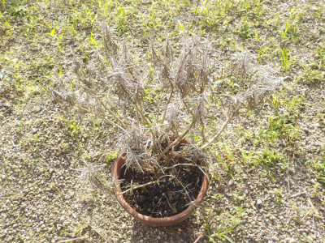
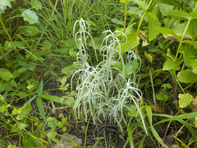
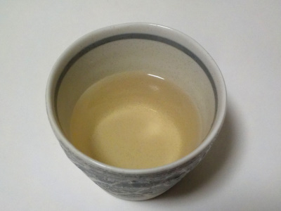
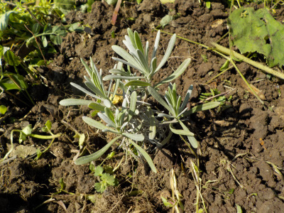
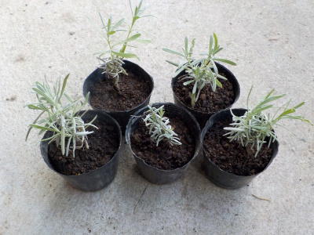
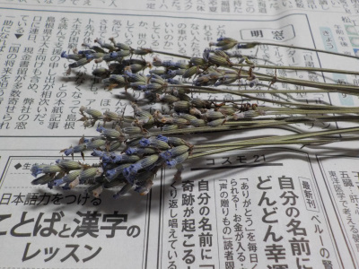
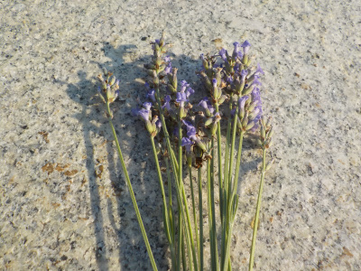
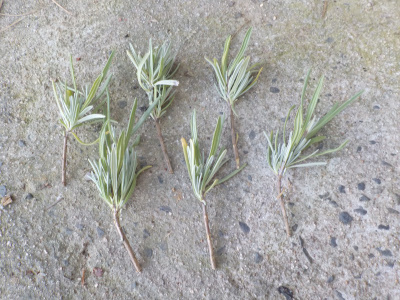
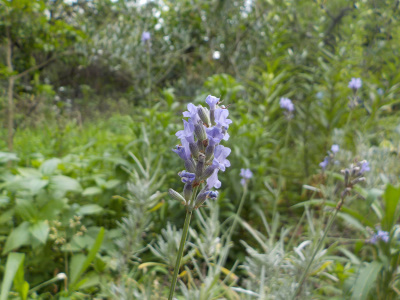

遊びで植物を育てよう
2023/09/02
ラベンダーを1鉢枯らしました。

一応日差しが弱くなる場所に置いていたんですが、枯れてしまいました。
素焼き鉢なので乾燥し過ぎたんじゃないかと思います。
もうちょっと涼しくなったら挿し木して増やそうと思います。
【ラベンダーTOP】
【花TOP】
【園芸TOP】
2023/07/17
ラベンダーは雑草に負けて成長してませんでした。

ラベンダーよりも雑草の成長が早いみたいで、雑草の下に隠れてしまっていました。
日陰でも枯れないのは凄いですが、あまり大きくなっていません。回りの雑草を刈ったので、これから大きくなるかもしれませんが、また雑草に埋もれてしまうんだろうな。
【ラベンダーTOP】
【花TOP】
【園芸TOP】
2023/05/21
手作りのタベンダー酒を飲みました。

手作りといっても、焼酎にラベンダーの花を漬けただけのラベンダー酒です。
花を沢山漬けたわけじゃないですが、味も香りもしっかりあって濃かったので水で薄めました。
飲むと薬草っぽい味がしました。砂糖を入れたら、薬膳酒っぽいものになりました。
ラベンダーの香りがする甘いお酒は特に美味しいとは思いませんが、なんか体に良さそうで癒される気分になるので、あってもいいかなーと思いました。
【ラベンダーTOP】
【花TOP】
【園芸TOP】
2023/04/02
挿し芽のラベンダーを地植えにしました。

ラベンダーの活用方法はまだ見つかっていませんが、育っているので地植えにしました。
無計画ですね。後で邪魔になる確率が大です。
【ラベンダーTOP】
【花TOP】
【園芸TOP】
2022/10/10
ラベンダーの挿し芽に根っこが出ました。

ラベンダーの活用方法はまだ見つかっていませんが、挿し芽が成功したのでポットに植替えました。
活用方法が見つかって育てるとしたら、春に地植えすると思います。
【ラベンダーTOP】
【花TOP】
【園芸TOP】
2022/07/10
ラベンダーのドライフラワーが完成しました。

車の中で乾燥させたので車内はラベンダーの香りになると思ったんですが、全然臭わなかったです。
鼻を近づければ香りがするんですけど、離すとダメです。このままで芳香剤としては使えないです。
見るだけのドライフラワーを飾る趣味はないので、他の利用方法を探そうと思います。
【ラベンダーTOP】
【花TOP】
【園芸TOP】
2022/07/02
ラベンダーを収獲しました。

花は乾燥させて保存するらしいので、夏の自動車の車内に入れました。
たぶん2,3日でパリパリになるでしょう。

花の元の部分は挿し木します。成功したら畑に植えようと思ってます。
【ラベンダーTOP】
【花TOP】
【園芸TOP】
2022/06/27
ラベンダーが咲きました。

我が家のラベンダーは茎が少ないのでスカスカです。もうちょっと見た目を良くしたいです。
後、ラベンダー自体は地味なので観賞以外で使わないなら育てる必要がないんじゃないかと思いました。
今まで観賞しかしていなかったので、今後はハーブとして活用しようと思っています。使ってみて良ければ続けて育てるけど、そうじゃなかったら止めようかと思ってます。
【ラベンダーTOP】
【花TOP】
【園芸TOP】
好きな香りなので活用したいです。
【おいしいものを食べよう。】【しっかり寝よう。】
【ソロ活をしよう!】【季節感のあることをしよう。】【動画視聴はほどほどに。】【当サイトの全てのコンテンツは無断転載禁止です。】